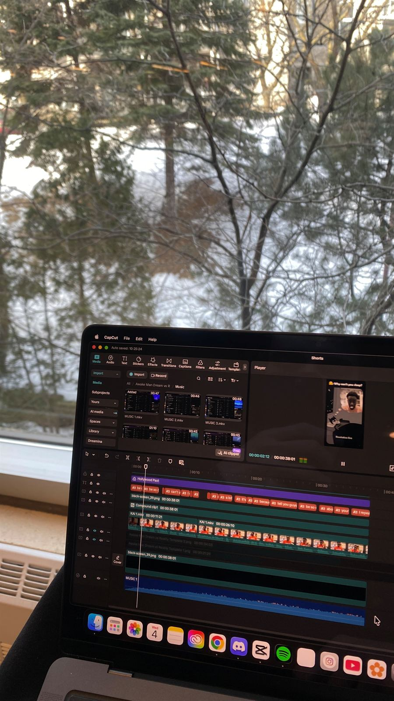
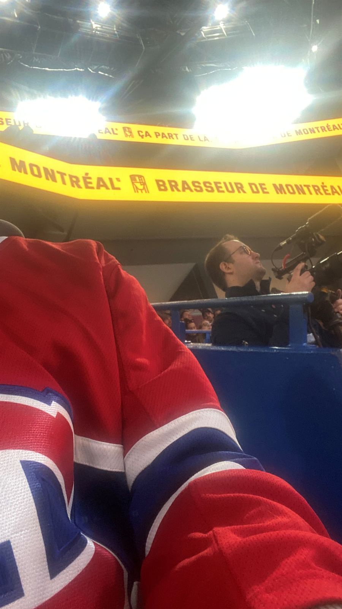
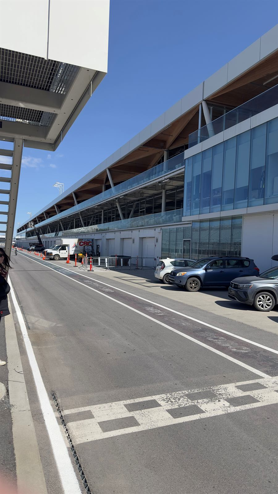
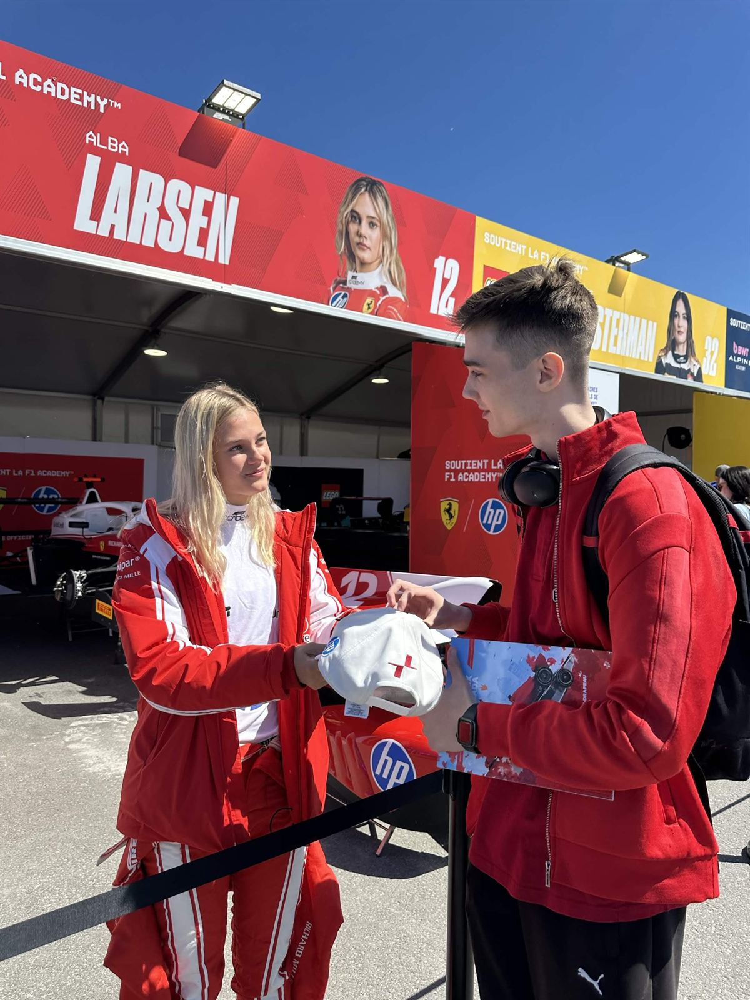
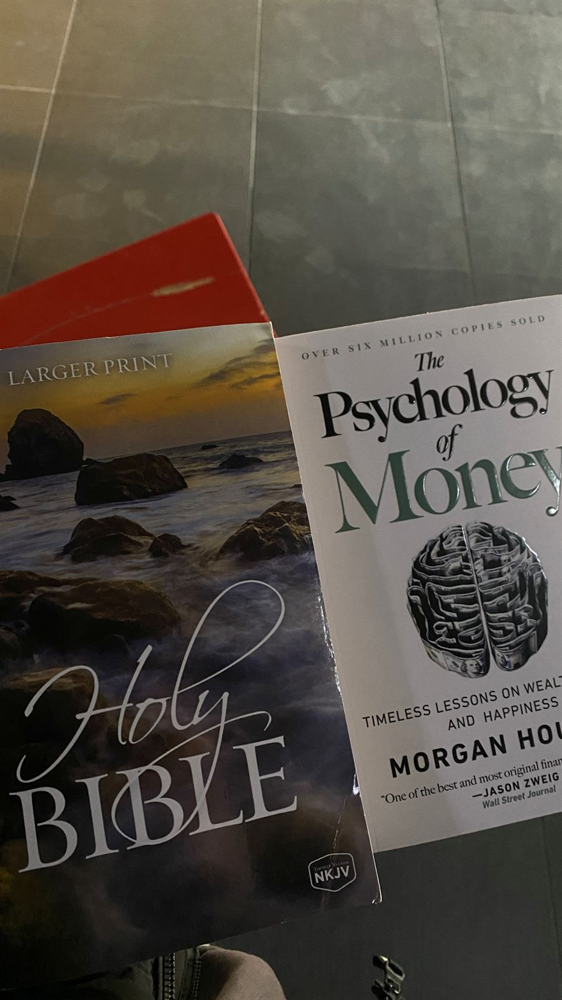
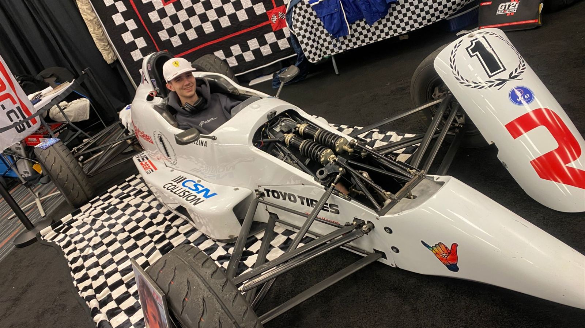

← Back to Outside the Track
✦ A hidden chapter · you read all the way here
THE PURSUIT OF
HAPPINESS
I'm chasing a seat in GT3. But if I'm honest with myself, that isn't the real finish line. This page is about what I'm actually chasing.
- PeaceFaith first
- PeopleNever alone
- PurposeWho I become
Scroll
01 The question
More isn't
the answer.
For 225 days I was building something that was working, and I still wasn't happy.
The channel was growing. The numbers were going up. And every night I was splitting myself in two, then jumping in the rig with whatever was left.
That's when I understood something: results, views and iRating can make a good day better, but they can't make a life feel full. If I wait for a trophy to be happy, I'll be waiting forever, because there will always be a next one.
- Where it startedHappy with a headset and a wheel. Nothing to prove yet.

225 daysWorking, growing, and running on empty.
02 Peace
Calm in
the cockpit.
My faith is where my happiness starts. As an Orthodox Christian, I don't have to carry every result on my own shoulders. I do the work, and I trust God with the rest.
That doesn't make the pressure disappear. It changes what the pressure means. A bad race is a bad race, not a verdict on who I am.
Peace isn't the absence of pressure. It's knowing who holds it.
03 People
Nobody wins
alone.
Some of my happiest nights didn't happen on track. They happened after: helmets on the table, steak and fries, and everyone arguing about who braked too late.
My family believed in this before there was anything to believe in. My friends show up when there's nothing to celebrate. If I ever make it, the best part will be turning around and seeing them there.
 The boysFour helmets, one table.
The boysFour helmets, one table. After the raceThe best debrief is over dinner.
After the raceThe best debrief is over dinner.
Habs game nightLoud crowd, good company.
04 Discipline
Freedom in
saying no.
I want the kind of happiness that doesn't cost me tomorrow.
Living sober, keeping my word, going to bed when I should: none of it sounds exciting. But every promise I keep to myself makes me trust myself a little more.
That's a quiet kind of happy, and it lasts longer than any night out.
05 The little things
Things that
make me happy.
- A clean lap with zero incidents.
- Steak and fries after a kart night.
- An empty pit lane before anyone else arrives.
- A white cap with fresh signatures on it.
- Finishing an edit at 2 a.m. and liking it.
- The Habs winning at home.
- A book that changes how I think.
- Sitting in a race car that finally fits.
- A long dinner with family, phones away.
- Knowing I gave it everything today.

Before anyone elseAn empty pit lane, all mine.
After the signatureShe handed the cap back and looked right at me. I'm keeping that moment.
ReadingTwo books, two kinds of wisdom.
That smileA single-seater, finally my size.
06 Someone to share it with
To the one
I haven't met yet.
To you, whoever you are
I don't know your name yet. Maybe we've already crossed paths: somewhere in the crowd, a few steps away, in the garages or on the grid, and neither of us knew.
By the time you read this, I hope I'm closer to that seat. But I want you to know what I'm really hoping for: someone to share the ordinary days with, not just the podiums.
I want a love built on faith, honesty and patience. Someone who prays with me, laughs at my worst jokes, and tells me the truth when I need to hear it.
I promise to show up. To keep my word. To give you my full attention, not whatever is left after the rig and the edits. You will never come second to a lap time.
And when the big moments come, I want to turn around and see you there.
— K.
I'd rather miss the shot than wonder what would have happened.
07 A note to future me
Dear Kiryl,
ten years from now.
2036
I hope you're still racing. But more than that, I hope you're still kind, still sober, still curious, and still close to God and to the people who were there before anyone was watching.
If you made it to GT3, enjoy every lap. If you didn't, I hope you know the chase was still worth it, because of who it turned you into.
Don't forget the kid with the VR headset. He was happy before he had anything to show for it.
— You, at 2026
Peace. People. Purpose. Happiness.
Happiness isn't something I'll find at the end of the Road to Racing. It's how I want to drive it.